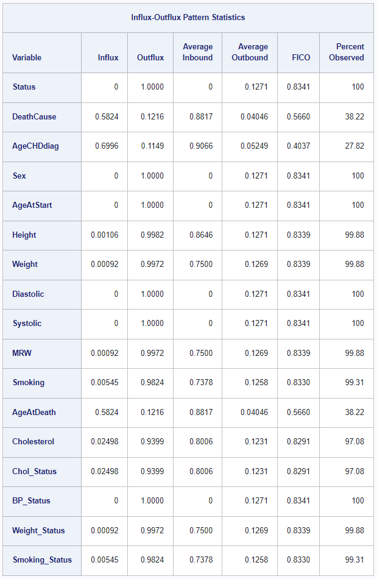

New MI Feature: Flux Statistics
The Viya 2024.04 release includes a brand new MI feature: new missing data statistics. An important choice when building an imputation model is the selection of variables to be included. One method to help in the variable selection process is the usage of summary statistics such as influx and outflux, as proposed by van Buuren. In his words: “Influx and outflux are summaries of the missing data pattern intended to aid in the construction of imputation models. Keeping everything else constant, variables with high influx and outflux are preferred. Realize that outflux indicates the potential (and not actual) contribution to impute other variables”
The MI statement now supports the new FLUX option. When specified, MI produces a table including the influx, outflux, average inbound and outbound, and FICO statistics along with a column indicating the percent of cases for which the particular variable has been observed. When ODS graphics are turned on, MI additionally produces a scatter plot of the variables' influx and outflux. For details, see the new section on Missing Data Statistics in the MI chapter of the SAS/STAT User’s Guide.
One thing that’s cool about this new feature for all users, not just those interested in multiple imputation, is the fact that this new feature allows you to get a complete overview of the percent of observed/missing cases for all variables — both character and numeric! Previously, you either needed to use separately procedures for character and numeric variables, or expend some work to get a macro written that creates a table of both types of variables for you.
With this new feature, you can simply use
/* optional: creates output ds with PctObs and PctMiss vars */
ods output Flux=Flux;
/* sample code using the sashelp.heart data set */
proc mi data=sashelp.heart flux
nimpute=0
displaypattern=nomeans;
class _character_;
var _all_;
fcs;
run;
Note that we can include all variables in our data set with var _all_. If our
data set includes character variables, we need class _character_ to label all
character variables as classification variables. If you are only interested in
a subset of the variables, you can of course specify them here. We use the FCS
statement to accomodate classification variables and we set nimpute=0 since we
don’t actually want to create imputations, just view the missing data statistics.
The ods output statement is completely optional. It creates a data set with
variables PctObs and PctMiss for every variable in the analysis that you could
then further process with PROC SQL or some other method.
In this example, the table will look as follows:

For a full walkthrough of this code, see the new example in the MI chapter of the SAS/STATS User’s Guide.
D. Michael Senter
Research Statistician Developer
My research interests include data analytics and missing data.